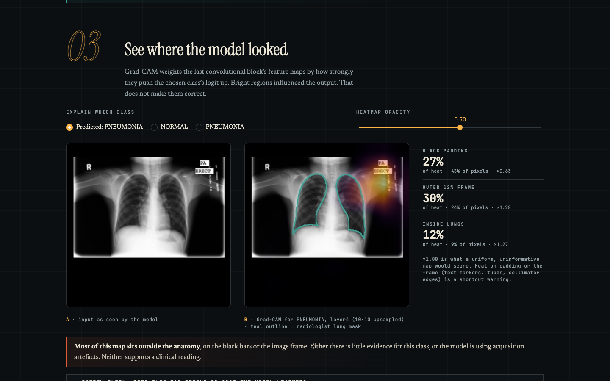

A pneumonia classifier gives you an answer. XRayLens shows how it got there, how far to trust it, and where it breaks.
Medical-imaging AI is often presented as one impressive accuracy number. That number can come from testing a model on images it was trained on. Saliency heatmaps then look convincing even when the model relies on text markers or image borders. Students, clinicians-in-training and the public rarely get a way to question a model's output.
XRayLens is an interactive lab built around a real, publicly released ResNet-50 pneumonia classifier. It turns each prediction into a four-step investigation, and it treats the evaluation as a product feature, not a footnote.
Python 3.12 · PyTorch · Streamlit · scikit-learn · pydicom, plus a static web build running the same model in the browser with ONNX Runtime Web (bit-exact Pillow preprocessing, scores within 5×10⁻⁶ of PyTorch). Model: Purino/resnet50-chest-xray-pneumonia,
pinned to a Hub commit, with preprocessing tested for exact parity with the model card's reference code. Grad-CAM is
implemented from scratch with hooks on layer4 and back-propagates the logit difference, because this
model's softmax saturates and softmax gradients vanish. 20 automated tests cover preprocessing, input handling,
Grad-CAM properties and metric correctness. Every dataset is pinned and sampled with a fixed seed.
| Finding | Measured |
|---|---|
| RSNA sensitivity / specificity | 99.5% (97.2–99.9) / 38.5% (32.0–45.4) |
| RSNA AUC (bootstrap 95% CI) | 0.913 (0.883–0.939) |
| Normal adults called pneumonia | RSNA 62% · Montgomery 53% · Shenzhen 20% |
| Calibration (RSNA, ECE) | 0.31; 76% of outputs <0.001 or >0.999 |
| Burned-in marker flips (n=838) | 91 → PNEUMONIA · 0 → NORMAL |
| Grad-CAM in lungs (Montgomery masks) | 27% of heat on 21% of pixels (×1.24) |

No valid in-distribution test exists, because the published weights were refit on every Kermany image. External cohorts are adults, so population shift and generalisation error are confounded. RSNA “lung opacity” is not confirmed pneumonia. Samples are modest, so all metrics carry 95% CIs. Grad-CAM is a coarse view of one layer. Not clinically validated, and not a medical device.